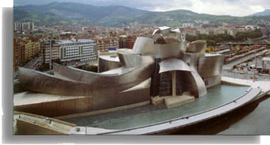

This system of web pages accompanies my Ph.D. dissertation, In Case of Emergency, Break Glass:
Ontological Metamorphoses in Norwegian and Finnish Postmodern Literature (Edvard Hoem, Jan Kjærstad, Sissel Lie,
Mariaana Jäntti, Juha K. Tapio). The dissertation was defended in Spring 2003 at the University of Washington and
can be purchased online from University Microfilms (UMI).
Please visit my translation home page as well.

Guggenheim Museum, Bilbao, Spain |
|
Postmodern architecture provides visual examples of aspects of postmodern literature. |
| Literature |
Architecture |
- question ontologies
- hybrids/intertextuality
- intentional "schizophrenia"
- metafiction/narrative levels
- not exclusive/elitist/traditionally canonical
- responds to local & global diversity
- mix high & low culture
- interest in post-colonial/gender/race/class/sexual orientation
- importance of symbols & simulacra
- erasures/traces/mises en abîme
- intentional ambiguities/fuzzy logic
|
- multivalency/double coding
- hybrids/eclecticism
- intentional "schizophrenia"
- symbiosis of cultures/styles
- architecture with a language
- not exclusive/elitist/traditionally canonical
- responds to the multiplicity of the city
- mix public and private spaces
- decoration/detail/conviviality/pleasure
- value from design, not materials
- importance of symbols & simulacra
- intentional ambiguities/fuzzy logic
|
McHale, Brian Postmodernist Fiction. New York: Routledge. 1987. pp 9-10.
Bertens, Hans & Douwe Fokkema, eds. International Postmodernism: Theory and Literary Practice. 1997.
Dal Co, Francesco Frank O. Gehry: The Complete Works 1998.
Jencks, Charles The Language of Post-Modern Architecture. 1991.
Gehry, Frank Frank Gehry, Architect. 2003.
|